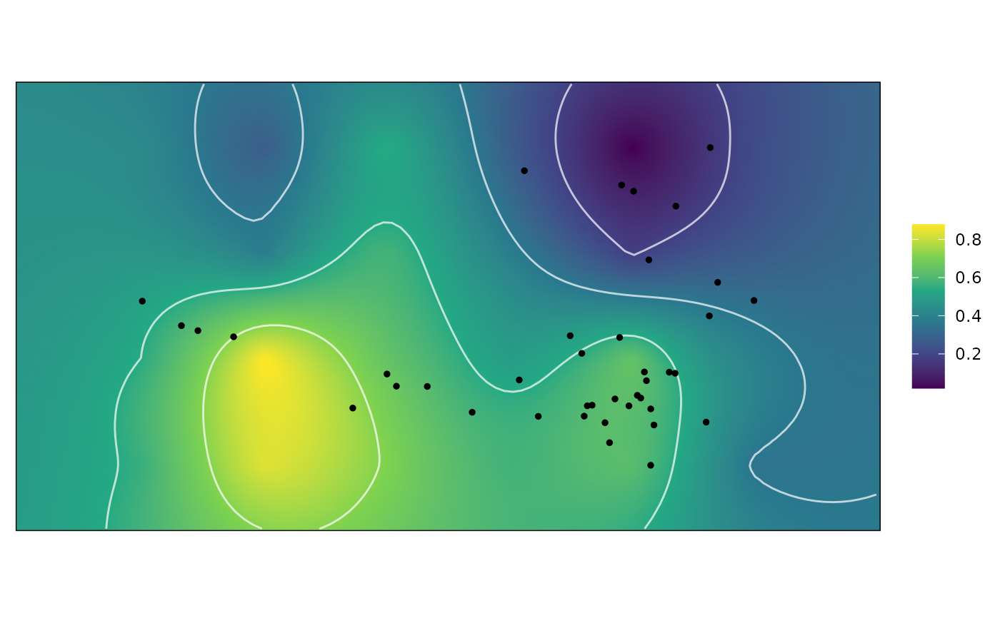

Plot Adaptive Landscapes
plot.wtd_lscp.RdThese plot plot methods plot an adaptive landscape, a weighted combination of functional surfaces. These landscape arise from calls to calc_lscp, calc_all_lscps, calcGrpWprime, and calcWprimeBy.
Usage
# S3 method for wtd_lscp
plot(x, alpha = 1, pt.col = "black",
interpolate = TRUE, contour = TRUE, ...)
# S3 method for grp_Wprime
plot(x, alpha = 1, pt.col = "black",
interpolate = TRUE, contour = TRUE, ...)
# S3 method for by_Wprime
plot(x, level, ncol = 1, alpha = 1,
pt.col = "black", interpolate = TRUE, contour = TRUE,
...)Arguments
- x
a
wtd_lscp,grp_Wprime, orby_Wprimeobject, the output of a call tocalc_lscp,calcGrpWprime, orcalcWprimeBy, respectively.- alpha
the transparency of the points for the data sample. A number between 0 (fully transparent) and 1 (fully opaque). Passed to
ggplot2::geom_point.- pt.col
the color of the points for the data sample. Passed to
ggplot2::geom_point.- interpolate
whether to interpolate across pixels in the grid. Passed to
ggplot2::geom_raster.- contour
whether to display contours in the grid.
- level
which level of the
by(subgrouping) variable to be plotted. If missing, all will be plotted.- ncol
when multiple subgroups are plotted, in how many columns should the plots be arranged.
- ...
ignored.
Details
These plotting functions are wrappers for ggplot2 raster plotting functions. For more precise control of raster plotting see ggplot2::geom_raster.
See also
calc_lscp, calc_all_lscps, calcGrpWprime, and calcWprimeBy for the functions used to create the objects that are plotted
plot.kriged_surfaces for plotting functional surfaces prior to combining them into an adaptive landscape.
ggplot2::geom_raster, ggplot2::geom_point, and ggplot2::geom_contour for the underlying plotting functions.
Examples
data("warps")
data("turtles")
warps_fnc <- as_fnc_df(warps, func.names = c("hydro", "fea"))
kr_surf <- krige_surf(warps_fnc, new_data = turtles)
#> [using ordinary kriging]
#> [using ordinary kriging]
#> [using ordinary kriging]
#> [using ordinary kriging]
weights <- c(hydro = .5, fea = .5)
w_lscp <- calc_lscp(kr_surf, weights = weights)
plot(w_lscp)

plot(w_lscp, countour = FALSE, pt.col = "white")
 # See help("calc_lscp"), help("calcGrpWprime"), and
# help("calcWprimeBy") for examples when used with
# those functions
# See help("calc_lscp"), help("calcGrpWprime"), and
# help("calcWprimeBy") for examples when used with
# those functions